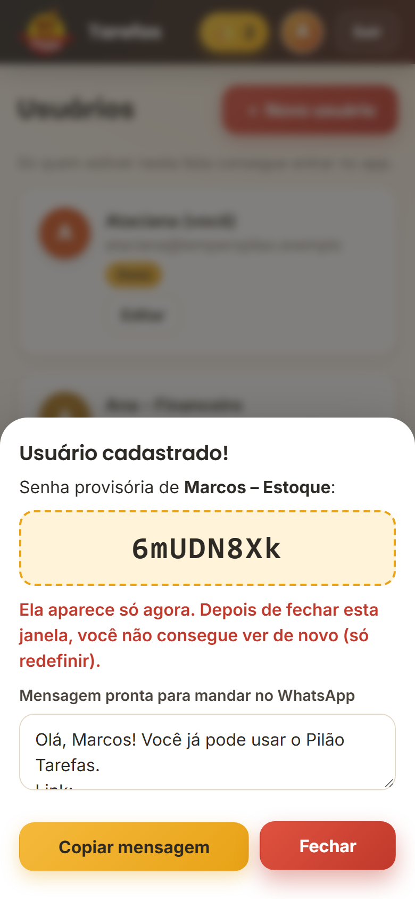
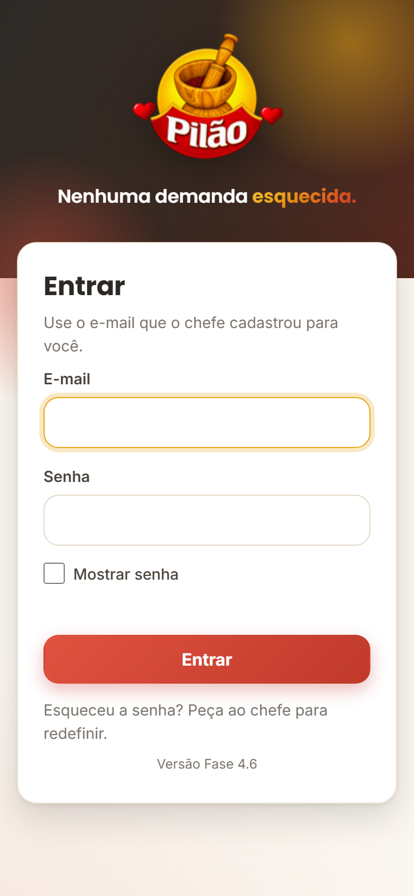
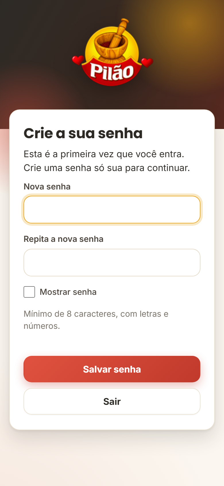
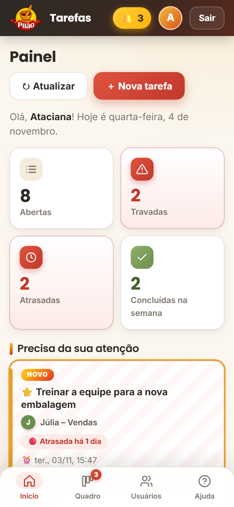

Passo a passo para cada pessoa da equipe. O chefe cadastra, a pessoa entra e cria a própria senha.
Em Usuários → Novo usuário, o chefe digita nome e e-mail. O app gera uma senha provisória e já monta uma mensagem pronta para mandar no WhatsApp. A senha aparece só uma vez.

Abre o endereço que o chefe mandou, digita o e-mail e a senha provisória. Só entram pessoas cadastradas pelo chefe. O e-mail pode ser de qualquer provedor (Gmail, Outlook, etc.).

No primeiro acesso o app pede uma senha nova: pelo menos 8 caracteres, com letras e números. Nem o chefe vê essa senha. Se esquecer, o chefe gera outra provisória.

Android (Chrome): toque nos três pontinhos ⋮ → Adicionar à tela inicial (ou Instalar app).
iPhone (Safari): toque no botão Compartilhar (quadrado com seta) → Adicionar à Tela de Início.
Pronto: ele passa a abrir com um toque, como qualquer outro aplicativo.

Senha só sua, nunca compartilhada. Em computador de uso comum, clique em Sair ao terminar. Depois de 5 erros seguidos, o acesso fica bloqueado por 15 minutos, para proteger a conta.